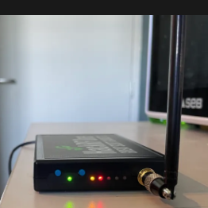

c4tz
c4tz
Radio

Quand tu branches le HackRF One, tu dois avoir 4 LEDs dont la LED USB en vert (voir photo).

https://zadig.akeo.ie/
- Options → List All Devices
- Sélectionne HackRF One
- Choisis WinUSB
- Install Driver / Replace Driver
- Redémarre SDR# (en admin sous Windows)
Fichiers à télécharger
SDR++ (réglages rapides)

Pour un signal faible, active le LNA (Low Noise Amplifier) pour amplifier sans trop ajouter de bruit.


Joue avec VGA gain et LNA gain pour obtenir un signal clair et écoutable.
À côté de Lille (62), liste les stations locales visibles : frequence-radio.org puis choisis ton département.
Prise en main simple (logiciel + SDR). Attention à ne pas passer le HackRF en mode DFU.
Le binaire hackrf_info (fourni) peut aider en cas de doute.
URH

Observation de paquets sur la bande 2.412 GHz.
Wi-Fi 2,4 GHz (avec SDR++)

- Des pics réguliers indiquent du Wi-Fi.
- Les plus forts correspondent souvent aux beacons des routeurs proches.
- Activité plus dense pendant du streaming / download / navigation.
Exemple
- Barres jaunes persistantes = émissions stables (Wi-Fi).
- De nombreux pics blancs peuvent être des interférences (p.ex. micro-ondes).
On peut aussi balayer en 5 GHz selon le matériel.
Satellite (NOAA / WX)

Le HackRF ne capte que pendant une émission (passage du satellite).
Traite ensuite avec dump1090 (analyse) et WXtoImg (image météo).
Bluetooth Low Energy (BLE)
BLE = 40 canaux de 2 MHz (2402–2480 MHz). Advertising sur 37 (2402), 38 (2426), 39 (2480).
Rouge = activité détectée (émissions). Bleu = signaux BLE reçus.


- Lecture des fichiers
capture_channel_37.raw,38.raw,39.raw - Décodage IQ → bits
- Recherche de l’Access Address BLE
0x8E89BED6
- Capture des canaux 37/38/39
- Spectrogramme par canal
- Sauvegarde des .raw et images
Analyse l’activité BLE à partir de fichiers .raw et détecte l’Access Address.
Attention : une capture d’1 minute est très lourde et lente.
Préfère des fenêtres de 10–30 s selon l’environnement.